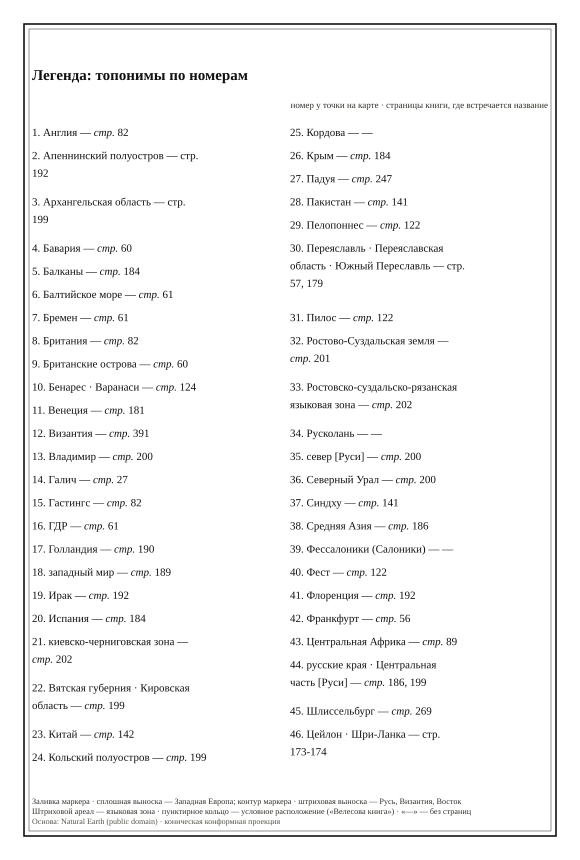
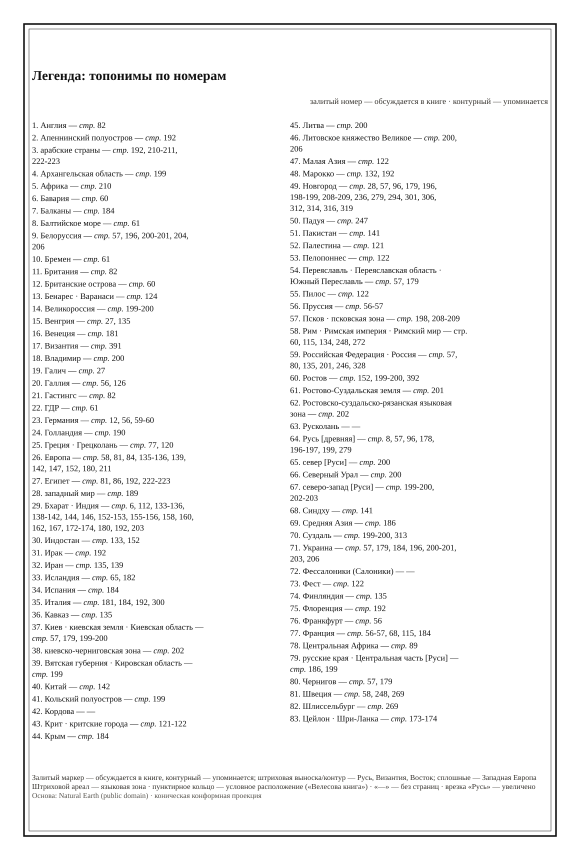
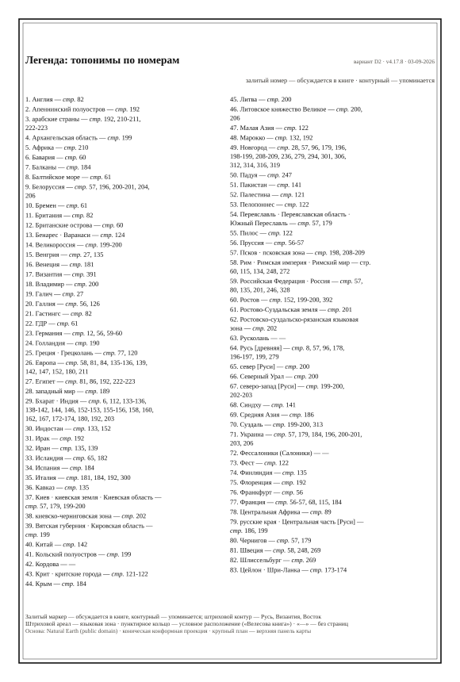
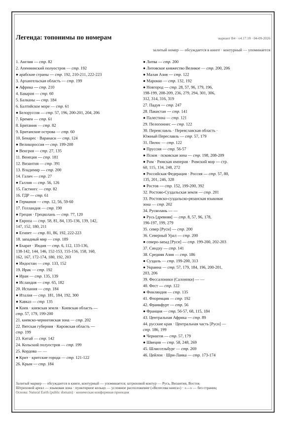
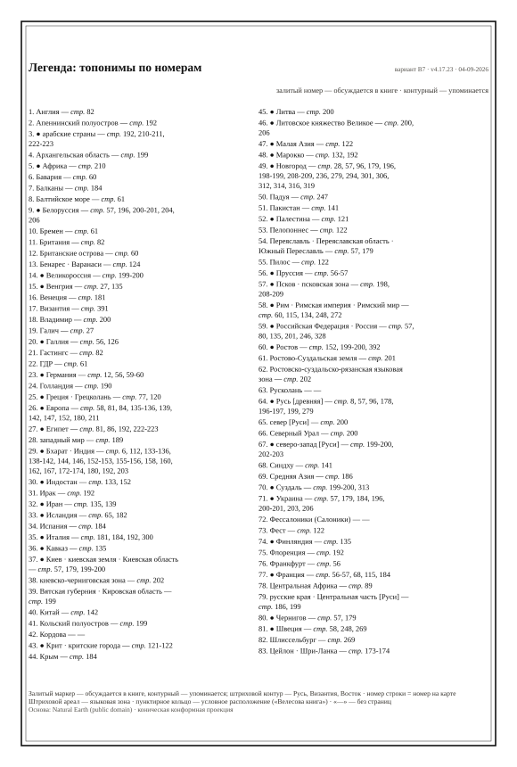

Ссылайтесь на номер варианта («№2»). Каждая D-версия — свой URL, штамп версии стоит в правом верхнем углу листов. Страница собирается scripts/print/toponyms_versions_page.mjs.
Зелёная строка под каждым вариантом — метрики H4051: сколько выносных линий рисует лист, сколько подписей вообще нарисовано (и сколько молча не нарисовано), сколько уложилось в бюджет 10 мм от своей точки, и медианный / 90-й процентиль отступа подписи от точки.
v4.17.5 · toponyms-map.html
выносных линий: 53 · подписей нарисовано: 37 из 37 · в бюджете 10 мм: 17 · отступ от точки p50/p90: 18.46 / 49.4 мм
v4.17.5 · toponyms-map-b-print.html
выносных линий: 51 · подписей нарисовано: 28 из 28 · в бюджете 10 мм: 16 · отступ от точки p50/p90: 23.97 / 58.31 мм
★ ★ отметка MG 03-09-2026: «the version I liked most»


v4.17.5 · toponyms-map-c-print.html
выносных линий: 38 · подписей нарисовано: 28 из 28 · в бюджете 10 мм: 16 · отступ от точки p50/p90: 8.45 / 55.79 мм

v4.17.7 · снят с URL, файлы перезаписаны D2 — извлечён из git-тега один раз в d1-*


v4.17.8 · toponyms-map-d.html (заморожен)
выносных линий: 30 · подписей нарисовано: 0 · в бюджете 10 мм: undefined · отступ от точки p50/p90: undefined / undefined мм


v4.17.9 · toponyms-map-d3.html
выносных линий: 30 · подписей нарисовано: 0 · в бюджете 10 мм: undefined · отступ от точки p50/p90: undefined / undefined мм


v4.17.10 · toponyms-map-b2.html
выносных линий: 39 · подписей нарисовано: 28 из 28 · в бюджете 10 мм: 22 · отступ от точки p50/p90: 2 / 15.89 мм

v4.17.16 · toponyms-map-b3.html
выносных линий: 32 · подписей нарисовано: 22 из 22 · в бюджете 10 мм: 16 · отступ от точки p50/p90: 6.57 / 17.14 мм

v4.17.19 · toponyms-map-b4.html
выносных линий: 39 · подписей нарисовано: 20 из 20 · в бюджете 10 мм: 13 · отступ от точки p50/p90: 6.91 / 17.14 мм


v4.17.21 · toponyms-map-b5.html
выносных линий: 96 · подписей нарисовано: 37 из 37 · в бюджете 10 мм: 17 · отступ от точки p50/p90: 13.24 / 28 мм

v4.17.22 · toponyms-map-b6.html
выносных линий: 79 · подписей нарисовано: 23 из 23 · в бюджете 10 мм: 11 · отступ от точки p50/p90: 13.24 / 25.16 мм

v4.17.23 · toponyms-map-b7.html
выносных линий: 92 · подписей нарисовано: 43 из 65 (не нарисовано 22) · в бюджете 10 мм: 19 · отступ от точки p50/p90: 12.19 / 21.53 мм


v4.17.24 · toponyms-map-b8.html
выносных линий: 94 · подписей нарисовано: 38 из 63 (не нарисовано 25) · в бюджете 10 мм: 13 · отступ от точки p50/p90: 13.24 / 23.75 мм

v4.17.26 · toponyms-map-b9.html · ★ принят MG («go №14»)
выносных линий: 30 · подписей нарисовано: 40 из 63 (не нарисовано 23) · в бюджете 10 мм: 17 · отступ от точки p50/p90: 10.75 / 20.7 мм

v4.17.27 · toponyms-map-b10.html · разряды к ревью: [TOPONYM_SCALE_RANK_DRAFT_2026-09-04.md](https://github.com/gasyoun/BookIndex/blob/main/docs/TOPONYM_SCALE_RANK_DRAFT_2026-09-04.md)
выносных линий: 24 · подписей нарисовано: 36 из 51 (не нарисовано 15) · в бюджете 10 мм: 19 · отступ от точки p50/p90: 8.7 / 18.7 мм